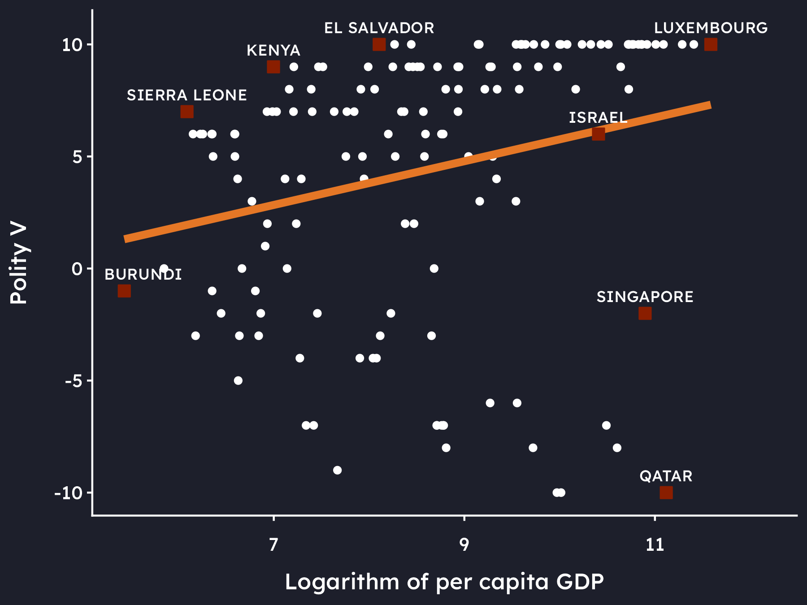
Dissertation Guidance
In God we trust. All others must bring data.
— W. Edwards Deming
This page is still work in progress.
The Motivation for a Dissertation
When you started out on a degree in political science a few years ago, you probably did so because you were curious to find out why certain things happened in the world. What could explain them? And what could be done to change them? This motivation taps into what the social sciences are all about:
Social Sciences
The social sciences are concerned with the study of society and seek to scientifically describe and explain the behaviour of actors.
It is worthwhile remembering this when you embark on your dissertation, as this is essentially the aim of this project: finding an explanation for a phenomenon you are particularly interested in. What makes the dissertation exciting, is that you are trying to answer a question that has not been answered before, or at least not in the way you are attempting to answer it. This will allow you to make a contribution to the knowledge in your field, and push the boundaries of what is known.
In an empirical dissertation, we find the answer to a research question by assessing the degree to which some observed data agree with a particular theory that you have chosen to explain a phenomenon. This is the essence of empirical research: we observe the world, and we use these observations to evaluate whether our theory is a good explanation for what we see.
Empirical
The term empirical relates to verification through observation rather than theoretical reasoning.
In what is to follow, I will outline the structure of an empirical dissertation and provide guidance on each individual section. The structure is not set in stone – it is perfectly fine to deviate from it. But it is important that all the considerations that I will outline under each section are addressed somewhere in your dissertation. Please discuss this with me in person, as every dissertation is – by definition – different.
Preliminary Advice
Unless you have chosen one of the POxxQ modules during your degree, it is highly likely that you have had limited to no exposure to empirical research design up to this point. If this is you, then I strongly recommend you have a look at these two books which outline the logic and the process of writing an empirical research project:
- Clark, T., Foster, L., & Bryman, A. (2019). How to do your Social Research Project or Dissertation. Oxford University Press.
- Walliman, N. (2020). Your Research Project – Designing, Planning, and Getting Started (Fourth Edition). London: Sage.
But before we dive into the details of the dissertation, here are a few general pieces of advice:
Do NOT leave this to the last minute There is a reason why the dissertation is worth 30 CATs at the undergraduate level, and even 60 CATs at the postgraduate taught level. It is a lot of work, and it takes time to do it well. Start early, and keep working on it regularly. There is no pre-set topic. No pre-set question. No reading list you can draw on. This is your job, and your job only. As nobody has looked at your question before, the path ahead is – to a point – unpredictable. There is no telling at present whether you will be able to find the data required to answer your question, for example. You might have to alter the question, or the approach you are taking to answer it. This is all part of the process, and is nothing to worry about. But it takes time to navigate all of these challenges.
Do NOT treat this like a regular essay This is a research project, and as such it is a very different beast to a regular essay. This means that the structure of a “normal” essay does not apply. Instead, you will have to follow a certain logic that is specific to research projects. It ensures that you are able to answer your research question in a way that is scientifically valid. I have visualised the logic that underpins a research project in Figure 1. I will explain each of these stages in the Section on Empirical Research Design
- Do NOT neglect the research element The raison d’être of your dissertation is to push the boundary of our knowledge, to make a contribution to the field. By definition, you cannot do this by regurgitating what other authors have already found. As such, it is important that you reserve about half of the word-count in your dissertation for those sections in which you are presenting your own research and findings. Students often indulge in the literature review, as it is closest to what they are used to from writing “regular” essays. It is important that you resist this temptation should it arise. The literature review is important, but it is not the focus of your dissertation.
Empirical Research Design1
As mentioned above, an empirical research project follows a particular logic that needs to be observed in order to ensure that the research question is answered and that the findings are scientifically valid. I am going to outline this structure now in more detail, explaining the role each of its constitutive elements has in the project. These are:
- Introduction / Research Question
- Literature Review
- Theory
- Hypotheses
- Conceptualisation and Measurement
- Data
- Methodology
- Analysis
- Discussion
- Conclusion
This is the recommended macro-structure of your dissertation, and thus each of these elements corresponds to a sub-heading in your dissertation. This is not set in stone. You can – and often you have to – divert from this macro-structure. But it is nonetheless important that all of the considerations I outline under each of these elements are addressed somewhere in your dissertation. Please discuss this with me in person. To help you navigate the text, I have highlighted important components or considerations in blue.
Research Question / Introduction
A good research question is like a good Tinder bio — clear, intriguing, and not trying to do too much at once.
Research Question
A research question is a specific enquiry relating to a particular topic or subject. It often forms the starting point of the research cycle.
The introduction of a good dissertation starts with the puzzle. The motivation of a dissertation is to find out why certain things happened. You might, for example look at some descriptive statistics for sub-Saharan Africa, and notice that even though sub-Saharan Africa’s average per capita GDP is considerably lower than the rest of the world, its average Polity V score has managed to approach the rest of the world over time, see Figure 2. This is a real puzzle, because modernisation theory would suggest that countries should only democratise as they develop economically.
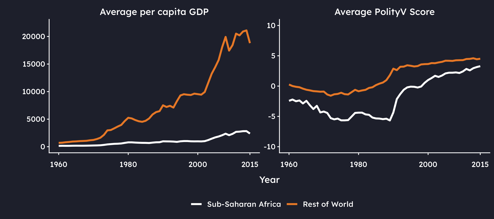
This logically leads to the question of whether socio-economic development influences the process of democratisation in sub-Saharan Africa. This is the research question, and it needs stating clearly in the introduction of the dissertation. Everything that follows in the dissertation builds upon this question, and needs to be compatible with it. If you do anything in the dissertation that is not in aid of answering this question, this is bad news for the coherence and ultimately for the mark of the project.
It may sound daft, but write the research question on a slim strip of paper and pin it to the top of your screen. When you write, look up every now and then and re-read the question. Ask yourself: “Does what I am writing help answer this question?” If the answer is no, delete what you are writing and re-calibrate.
This also means that the research question determines the scope of the dissertation. It is important that the question is neither too wide nor too narrow for the word limit. If it is too wide, you will not be able to answer it in the space available. If it is too narrow, you will fall short of the expected word count. Finding the right balance between the two is an art, and something we can calibrate together.
When you are stating this question, you should also explain clearly the contribution you are going to make with your dissertation. A good dissertation makes a contribution in at least two of the dimensions displayed in Figure 3.
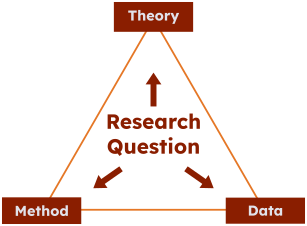
Students often freak out over this, because “making a contribution” sounds very difficult. I can assure you that it is in fact more difficult NOT to make a contribution. You have at least three different dimensions to tick this box. Data is the “cheapest” one, as there will always be more data available to you at the point of writing your dissertation than to anybody who has written on the topic before. As long as you do a good job in sourcing the best data and reading widely around the topic you are almost sure to satisfy this dimension by default. The other two dimensions are more difficult, but they are also more rewarding. You can make a contribution by using a new theory (see Theory) to explain a phenomenon. Or you could use the same theory, but you decide to measure its core concepts differently from previous research (see Conceptualisation and Measurement). Who is to say that economic development should be measured by such things as per capita GDP, life expectancy, and primary school enrolment? You might decide to measure it by the amount of rain that falls in a country each year, because more rain leads to better crops, which leads to more food and higher well-being (see Barrios et al. (2010)). The last dimension is that of methodology, and the same principle applies here. You might use a different method altogether to answer your research question, or you might use the same method, but you might use it with a modification. On my module “The Life and Death of Democracies and Dictatorships”, for example, we use a Markov Transition Model to model democratic emergence and survival – a method that has been used by many an author before (see Przeworski et al. (2000), Boix & Stokes (2003), Epstein et al. (2006)). But we are adding correlated random effects to the model to account for unobserved heterogeneity, something none of these publications have done. This is a methodological contribution. Clearly articulate these contributions in your introduction.
Finally – and it is important not to forget this – outline the plan of the study so the reader knows how you are going to to go about answering the question, and state the findings. It is not a good night story. You need to tell the reader that Hänsel and Gretel got home all right in the end.
Write the Introduction Last
I can usually tell the mark of a dissertation after reading just the introduction. The reason is that you can only write a clear introduction if you have thought the dissertation through really well. This allows you to clearly articulate the puzzle, the question, and the contribution, and to explain how you ultimately arrived at the answer. My advice is to map the intro out in bullet point only whilst you are writing the dissertation. It will change over time, and you would have to re-write it quite a few times. Write the intro and the conclusion last – once you have everything in place.
Checklist for the Research Question / Introduction
Literature Review
Literature reviews: where you summarise 200 pages in 2 sentences and still get told you missed something.
Literature Review
The literature review is an analytical summary of the literature relating to a particular topic with the objective of identifying a gap and thus motivating a research question.
Despite its promising name, the literature review is not a review of the literature. This would indicate that you take each source by itself, discuss what it has done and to what conclusion it has come. A literature review is an analytical piece of writing that identifies a gap in the literature that you are hoping to fill with your research.
It is often written like a funnel, from the general to the specific, at the end of which the reader must be able to understand the motivation for your research question. To stay with our example of modernisation theory, you could structure the literature review as follows:
- What makes countries democratise is one of the principle questions asked in comparative politics
- One of the most frequently used theories in this literature is modernisation theory
- Investigated at the global level, studies usually find evidence for a relationship between development and democracy
- At the regional level, however, the theory tends to lose its explanatory power
- Studies on Latin America, for example have found evidence in support of the conclusion that no such link exists there
- Similar investigations for sub-Saharan Africa do not exist.
- These are mostly qualitative, only comparing few countries at the same time
- A macro-quantitative study on the entire region is required to assess an empirical generalisation of the theory
- Efforts which have been made, ignore the problem of missing data and are thus placing their conclusions on thin empirical ground
- The contribution of this dissertation is to fill this gap by conducting a macro-quantitative study of the entire region, using the method of multiple imputation to address the problem of missing data and thus to allow for more robust conclusions.
This is – in a nutshell – the literature review of my PhD thesis.
Checklist for the Literature Review
Theory
Data tell you what happened.
Theory tells you why it still doesn’t make sense.
Theory
A theory is a formal set of ideas that is intended to explain why something happens or exists. (Oxford Learner’s Dictionaries, n.d.)
You cannot write a dissertation without a theory, or an analytical framework. This is what puts the “science” in “political science”. Without it, you might as well go to the Dirty Duck and have a chat with your mates about why you think things happen. A theory provides your enquiry with structure. Indeed, it is the theory which determines the hypotheses, the concepts, their measurements, the methodology, and, importantly, the analysis.
In this section, you need to outline the theory or analytical framework you are using, and explain how it relates to your research question. I use the terms theory and analytical framework separately here, as sometimes no “proper theory” is needed. You might just wish to draw on the approach another author has used in their research to guide your analysis, and this may well be sufficient for your purpose.
To properly explain the phenomenon under investigation, you also might wish to combine theories. This is perfectly fine, but you need to explain how they fit together and why you are doing this. For example, you could combine the propositions of dependency theory with the conceptual work on neopatrimonialism to explain why natural resource dependence has hindered democratisation in sub-Saharan Africa. Here, core countries would collaborate with the elites in the periphery to extract natural resources, and the elites would use the rents from these resources to consolidate their power and thus prevent democratisation. In the context of neopatrimonialism, these rents would be used to satisfy the patrimonial structures that exist alongside the legal-rational bureaucracy in these countries, ensuring the survival of autocratic elites. If you are using multiple approaches, it is important to explain the tenets of each of these theoretical approaches and how they fit together.
Regardless of whether you use one theory, or you are combining multiple ones into one coherent narrative, the discussion in this section will lead you to proposing your own causal chain or mechanism that you will test in your dissertation. State this chain or mechanism clearly here, and make sure that you stick to (and do not forget about) it in the rest of your dissertation. I will illustrate how this works in the discussion of the remaining sections of the dissertation.
Checklist for the Theory
Hypotheses
Hypotheses: because “I just had a feeling” isn’t peer-reviewable.
Hypothesis
A hypothesis is a claim which is based on theory or empirical observation, and predicts how actors are supposed to behave in a particular situation.
Theories are complex, and often contain multiple propositions. In order to test a theory, we need to isolate these propositions and turn them into testable statements. These statements are called hypotheses.
In this section, state the hypotheses you are testing, for example:
- \(H_1\): Higher levels of socio-economic development make democracies more likely to emerge.
- \(H_2\): Higher levels of socio-economic development make democracies more likely to survive.
Each hypothesis carries with it a null-hypothesis which we will test against. For example, the null-hypothesis for \(H_1\) would be that higher levels of socio-economic development do not make democracies more likely to emerge. If we have sufficient evidence to suggest that this is not the case, then we reject the null hypothesis.
Testing against a null-hypothesis might strike you as an odd choice, at first. After all, we care about the alternative hypothesis to show whether our theory has explanatory value. The answer to this conundrum lies in how scientific inference works, and in a principle we owe to Karl Popper. Instead of trying to “prove” that an effect exists, we adopt the sceptical position that it does not, and then ask whether the data can overturn it. This means that the logic only ever travels in one direction: towards refutation.
Popper and the Logic of Falsification
- Popper begins with the problem of induction: no number of confirming observations can establish a universal claim (see Popper (1935), reprinted in 2005, see also Hume (1748), reprinted in 1999).
- A thousand white swans do not prove that all swans are white (see Mill (1888))
- But a single black swan refutes it — there is an asymmetry between verification and falsification.
- Falsification is deductively valid in a way that confirmation is not, and for Popper this is what makes empirical science possible.
- This is why a hypothesis must be falsifiable (Walliman, 2020), and why a significance test looks for evidence against the null rather than for the alternative.
In the research design I am outlining here, we are thus following the logic of inductive reasoning:
Inductive Reasoning
Reasoning from specific observations to a general conclusion: the evidence supports the conclusion but never guarantees it, since further observations could always overturn it.
This is opposed to deductive reasoning which Popper rejects as unscientific. From our perspective today this is not quite true – deductive reasoning is a core part of scientific practice, though it works alongside inductive reasoning rather than replacing it.
Deductive Reasoning
Reasoning from general premises to a specific conclusion that follows from them with certainty: if the premises are true, the conclusion must also be true.
Checklist for the Hypotheses
Conceptualisation and Measurement
It’s like the tale of the roadside merchant who was asked to explain how he could sell rabbit sandwiches so cheap. “Well,” he explained, “I have to put some horse-meat in, too. But I mix them 50:50. One horse, one rabbit.”
— Darrell Huff, How to Lie with Statistics
The hypotheses we formulated in the previous section contain abstract concepts such as “socio-economic development” and “democracy”. These concepts mean different things to different people, and it is imperative that you outline how these are understood and measured in the context of your dissertation. This is the task of conceptualisation and measurement.
Conceptualisation and Measurement
The task of breaking down an abstract concept into a number.
In this section, you need to state the core concepts you are using and how you are proposing to measure them. It is important that you explain all of your choices, so that your thought process is clear to a reader. But how do you make these choices? Let me explain this in a bit more detail.
How to do it
Let us start with the most obvious question: what is a concept?
Concept
Concepts are the building blocks of theory and represent the points around which social research is conducted. (Clark et al., 2021, p. 150)
This definition is useful in that it illustrates the link between the theory you are using as an explanatory framework, the hypotheses you are testing, and the concepts themselves. But it does not advance us much in terms of how to use them. Instead, let’s turn to the discussion in Adcock & Collier (2001), who provide a more practical approach to working with concepts. We start with a background concept:
Background Concept
The background concept refers to the broad constellation of meanings and understandings associated with a given concept. (Adcock & Collier, 2001, p. 531)
We can use the metaphor of a tree to illustrate how we turn this background concept into something that is useful for our research. The background concept is the trunk of the tree. It is big, unwieldy, and you could not just pick it up and carry it away. In its present form, it is not useful for our research – we need to turn it into something more specific.
You can also think of the background concept as big supermarket that stocks everything you could possibly wish to buy in relation to the concept. If we took food as an example, then this supermarket would stock every possible ingredient you could think of.
But when you go to a supermarket for food, you usually have a particular meal in mind – a pizza, for example. A pizza consists of certain components, such as the base, the toppings, and the cheese. So, when you go shopping for the pizza, you will only go into the aisles containing these components, and not turn into the aisles containing the ingredients for a cake, for example. This specific selection of components makes what is called a systematised concept.
Systematised Concept
A systematised concept is a specific formulation of a concept used by a given scholar or group of scholars; commonly involves explicit definition. (Adcock & Collier, 2001, p. 531)
When you are writing your dissertation, the pizza is your research question. It determines which components a concept should contain. These components are called attributes.
Attribute
An attribute is a component or characteristic of a concept.
The process of selecting them is called conceptualisation.
Conceptualisation
Conceptualisation is the process of formulating a systematised concept through reasoning about the background concept, in light of the goals of research. (Adcock & Collier, 2001, p. 531)
In terms of the tree metaphor, the attributes are the branches of the tree (see Figure 5). And just as a tree has multiple branches, a concept usually has several attributes. Besides participation, we might wish to include contestation, staying with the minimalist definition of democracy advanced by Dahl (1971).
Selecting attributes is not an easy task, but it is important that you do so with your research goals in mind. Take democracy as an example. If we are operating in the context of sub-Saharan Africa, we might want to include attributes that are relevant for an “African” understanding of democracy. Ake (1993), for example, argues that most societies in Africa are still “pre-industrial and communal and [their] cultural idiom is [therefore] radically different” (Ake, 1993, p. 239). For this reason, “for African democracy to be relevant and sustainable, it will have to be radically different from liberal democracy.” For example “[ordinary] Africans do not separate political democracy () from economic-well-being.” (Ake, 1993, p. 241). But using this understanding in an enquiry into the relationship between development and democracy poses two big problems. First, it would place economic well-being on both sides of the equation. The dependent variable (democracy) would contain it due to the African understanding of the concept, and it would be included on the side of the independent variables, because this is the factor modernisation theory proposes as the decisive factor in bringing democracy about and in sustaining it. We would create a tautology. Secondly, modernisation theory is strongly biased by Western ideals, and liberal democracy is the declared end point in the modernisation of a country. If we defined this end point as anything other than liberal democracy, we would not be able to do the theory proper justice. Expressed differently, the theory we selected has determined the way in which we should operationalise democracy: as a Western, liberal model.
Once we are clear on the attributes of a concept, we can turn them into something measurable. This is the task of measurement.
Measurement
Measurement refers to the selection of a measure or variable.
In the context of the pizza example, I referred to attributes as the components of the pizza: the base, the toppings, and the cheese. But if I asked you to bring some cheese, this would still not allow you to make a specific choice that is sure to satisfy my needs. You could bring cheddar, mozzarella, or Parmesan, and I might not want any of these. Measurement represents this last step in making the choice specific. It selects the measurements, or variables.
Variable
A variable is an element of a conceptual component which varies. We also call these “measures”.
In the tree metaphor, variables are represented by leaves (see Figure 6). They are small and specific enough so that we can pick them and carry them away. But crucially, they belong to a particular branch, and to a particular concept. When we use voter turnout, for example, we are measuring the attribute of participation, which is part of the concept of democracy. So, just as we climbed up into the tree, we also need to be able to climb back down, and end up at the same trunk we started off from. This ensures measurement validity.
If you are referring to the entire process of turning an abstract concept into a measurable quantity, we call this operationalisation.
Operationalisation
The process of turning an abstract concept into a measurable quantity.
Example
The other concept we used in our hypotheses was socio-economic development. This is a very broad concept, and the task of clearly defining it might seem daunting at first. But it shouldn’t be if you have written the theory section properly. Remember that I stressed the importance of a clear causal chain or mechanism in the theory section. This mechanism is what guides us in selecting the attributes and measurements of a concept. Let me give you a clear example. Consider the following causal mechanism:
As an agrarian society industrialises, more people move to urban areas. New jobs require education, and lead to higher wages. This brings about a middle class. Clustering in urban areas also lets people communicate more easily and access public services, which improves their health. As a result of increased wealth, health, and education, people leave behind traditional values and become more secular-rational. This critical engagement with tradition leads to demands for political participation, and eventually democracy.
| Concept | Attribute | Variable |
|---|---|---|
| Dependent Variable | ||
| Democracy | Participation | Miller (2022) |
| Contestation | ||
| Independent Variables | ||
| Economic Development | Industrialisation | % of GDP generated by Industry |
| Middle Class | per capita GDP | |
| Social Development | Urbanisation | % of population living in cities |
| Education | Literacy rate | |
| Communication | % of population with mobile phones | |
| Health | Life expectancy at birth | |
| Values | Secular-Rational / Self-Expression Values | |
As you can see, the table below the chain picks up on all attributes used in the causal chain and lists a measure for each. It is a good idea to include such a table in the dissertation, as it not only provides the reader with a quick overview, but also lets you check at a glance whether you have considered each step of the causal chain in the step of conceptualisation and measurement. If the answer is no, then you would not be able to test this chain properly. This means you would not be testing the theory properly, and would thus not be able to judge whether it is useful for answering your research question. It would be a major flaw in your research design, and very bad news for the mark, indeed.
I have used specific variables here, the like of which you would find in quantitative data sets such as the World Development Indicators. But do not mistake this for meaning that the task of operationalisation only applies to quantitative research. You have to undergo the same process in a qualitative research project. For example, if we are interested in how political elites in South-East Asia frame democracy, we could conduct a discourse analysis to find out which procedural vs. substantive elements (elections, rights, participation) appeared in speeches, and which were absent.
Checklist for Conceptualisation and Measurement
Data
The plural of anecdote is not data.
— Roger Brinner (attributed)
Data
The term data (plural) derives from the Latin “datum” which means “given”. For our purposes it is a collection of information for the purpose of analysis.
Once you have decided how to operationalise the core concepts of your hypotheses, you need to find data that allow you to measure them empirically. In this section you need to explain the data and the sources from which you obtained them.
If you used the World Development Indicators to measure economic development, this would amount to explaining why the World Bank is a reliable source, and why the data they provide are the best suitable for your purpose.
If you wanted to conduct a discourse analysis to determine elite’s framing of democracy, you would need to explain how you selected the speeches you analyse, and why they are representative of the population you are studying.
Types of Data
Data come in many different forms and guises, and so let me give you a brief overview of some ways in which we can distinguish between them. This is by no means an exhaustive list, and I should note that these types can also overlap. You can for example have quantitative data that is secondary in nature and covers time-series, cross sectional observations.
First up is the distinction I have been making all along in this discussion so far: quantitative vs. qualitative data:
Qualitative Data
Qualitative data refers to non-numerical information that captures meanings, experiences, or concepts, typically collected through methods like interviews, observations, or open-ended surveys.
Quantitative Data
Quantitative data refers to numerical information that can be measured and analysed statistically, typically collected through structured methods such as surveys, experiments, or tests.
We can further distinguish between primary and secondary data:
Primary Data
Primary data refers to original information collected firsthand by the researcher through methods such as surveys, interviews, experiments, or observations, specifically for the purpose of the current study.
Secondary Data
Secondary data refers to information that was originally collected by someone else for a different purpose but is used by a researcher for a new analysis; it includes sources like government reports, academic studies, and organisational records.
For the collection and use of primary data, you will have to obtain clearance through the university’s ethics procedure. This is a long, rather drawn-out process which often takes much longer than you can realistically afford for your dissertation. For this reason – as much as it pains me to say this – I strongly discourage you from choosing an approach that requires primary data in undergraduate and postgraduate-taught dissertations. If you are doing a PhD, however, you will certainly have enough time for this.
Lastly, data can be cross-sectional, time-series, or a combination of both:
Cross-Sectional Data
Cross-sectional data look at different units (or cross-sections) \(i\) at a single point in time.
Time-Series Data
Time-series data are a sequence of data points collected or recorded at regular time intervals, used to track changes, trends, or patterns over time.
Time-Series, Cross-Sectional Data
Time-series, cross-sectional data (also known as panel data) combine observations across multiple units (such as individuals, countries, or organisations) over multiple time periods, allowing analysis of both temporal dynamics and unit-specific differences.
Particularly in quantitative research projects, the question whether you are measuring across units, across time, or both, has huge implications on the method you will need to use.
Finding Data
I often get asked where to find data. So here is a list of some sources that make for a good point of departure:
- The Library
- The British Library
- Various Archives
- Harvard Dataverse for replication data
- UK Data Service — major UK government-sponsored surveys, cross-national surveys, longitudinal studies, UK census data, international aggregate, business data, and qualitative data
- Euro-, Afro-, Latino-, Asian Barometers for public opinion
- European Union Open Data Portal — data on the EU
- World Development Indicators for macro-quantitative data at country level
- World Health Organisation — the Global Health Observatory data repository
Checklist for the Data
Methodology
This study follows a mixed-methods approach: both hope and desperation.
Method(ology)
A method is a tool for systematic investigation.
In this section, you need to select a method, explain why it is suitable for your analysis, and outline how it works.
This section often puzzles students as few have consciously used a method, let alone deliberated over the choice between different options. I will give you a few examples for both qualitative and quantitative research methods below, but methodology is certainly one of those points in which a discussion with me as your supervisor would be very useful.
What I can say at this point already, however, is that “reading books and articles” is not a method. That is data collection. A method answers the question how you evaluate these data and extract useful conclusions from them in order to answer your research question.
Qualitative Research Methods
- Critical secondary text analysis (see Ivory, 2021)
- This is what you will have been doing in most of your essays in PAIS so far
- Critically examine and interpret existing texts, such as academic literature, historical documents, media content, or policy papers
- Goal: analyse their assumptions, perspectives, power dynamics, and underlying ideologies
- Not just a summary of the text
- Qualitative Comparative Analysis (QCA)
- Analyse qualitative data to identify configurations or combinations of conditions that lead to specific outcomes (see Rihoux, 2006)
- Case studies (Gerring, 2007; see Lijphart, 1971)
- Most Similar Systems Design (MSSD) (see Landman & Carvalho, 2017)
- Matrix Analysis (see Miles et al., 2014)
- A systematic approach to organising and analysing qualitative data using matrix tables or grids, see Table 1 as an example
- Organise data according to themes, categories, or variables, and use them to facilitate comparison, synthesis, and interpretation of the data
- Objective: identify relationships, patterns, and trends across different dimensions of the data
- Content Analysis (see Krippendorff, 2019)
- Systematic analysis of textual, visual, or audiovisual data to identify patterns, themes, and meanings
- Examine documents, media content, or other sources to understand social phenomena, discourse, and representations
- Involves coding of data
- Discourse Analysis (see Jørgensen & Phillips, 2002)
- Analysis of language use and communication practices to understand how language constructs social reality and shapes power dynamics
- Examine the language, rhetoric, and discursive strategies used in written, spoken, or visual texts
A combination of these methods is usually necessary / advisable.
| I — Britain, France, US (India) | II — Germany, Italy, Japan | III — Russia, China | |
|---|---|---|---|
| Character of economic development | Development of commercial agriculture | Development of commercial agriculture | No development of commercial agriculture |
| Class development and coalitions | Weakening of landed aristocracy; balance of power between crown and landed aristocracy (in Britain, France and India); absence of aristocratic–bourgeois coalition against peasants and workers | Strong land-owning class; coalition of powerful land-owning class and weak, dependent bourgeoisie | Strong land-owning class; weak bourgeoisie; mass peasantry with capacity for collective action |
| Role of the State | Revolutionary and violent break with the past | Strong State that provides trade protection, manages industrialisation, and controls labour | Centralised state and labour repression |
| Outcome | Capitalist parliamentary democracy | Capitalist fascism | Communism |
Quantitative Research Methods
- Descriptive Statistics
- Mean, median, mode, etc. (see Agresti, 2018)
- Graphical display (see Tufte, 2001)
- Inferential Statistics
- Bivariate methods, such as correlation (see Agresti, 2018)
- Multivariate methods
- Linear regression, such as OLS (see Gujarati & Porter, 2009)
- Binary dependent variable models (see Long, 1997)
- Time-series, cross-sectional analysis (see Beck et al., 1998)
Checklist for the Methodology
≈ half of the word allowance
Analysis
Here lies your beautiful hypothesis, slain by the ugly truth of your results.
— Adapted from Thomas Huxley (with a little flair)
Analysis
Analysis is the detailed evaluation of data to discover their structure and relevant information to answer a research question.
The whole – and sole – purpose of this section is to test your hypotheses. Using your selected method, you extract the relevant information from your data to evaluate whether you have sufficient evidence to reject your null hypotheses. This allows you to provide an answer to your research question at the end of the analysis.
It is important to stress here how the different components of the research project tie together. You have posed a research question which you are seeking to answer by employing the framework of a particular theory. This theory was distilled into certain hypotheses. You have decided how to measure the core concepts in these hypotheses, and found the necessary data to do so. You then selected a particular method that is suitable for your data. By evaluating these data systematically, you are able to test your hypotheses, and thus provide an answer to your research question.
This all might seem self-evident, and you might ask yourself why I am labouring this point so much. You would be surprised about the number of dissertations in which students have written a great theory section, have even gone to the trouble of operationalising their concepts properly, but then completely forgot about all of this in the analysis and did something that was at best tangentially related to what has been set up so carefully in previous sections. Please don’t be that student.
If you are writing anything in this section that is unrelated to earlier parts, you have two choices: either delete it and re-calibrate yourself, or revise earlier parts to motivate this particular avenue of investigation if you deem its inclusion necessary. Otherwise, the research design breaks down, and – you guessed it – that is bad news for your mark.
There are two things in particular I would like to stress when it comes to writing the analysis section: (1) the presentation of your results, and (2) the language used in the interpretation of results. Let me first address presentation.
PROPERLY2 Format Your Results
You should take a lot of pride in your dissertation. It is the crowning jewel of your degree and represents the cumulative effort of everything you have learned through your studies. You have invested a lot of work in getting to this point, and you will also have invested a lot of time in the dissertation. It is the last piece of assessment that will allow you to graduate from one of the best political science departments in the country, and with a degree from one of the best universities in the world. Remember this when you write your dissertation in general, and the analysis section in particular.
If you include figures, make them clear and readable, such as Figure 7. I have no time to go into the principles of good data visualisation here, but I can thoroughly recommend the seminal work by Tufte (2001) and other references in the field, such as Healy (2019), or Wickham (2016).
As for Figure 7, this is a good figure, because it:
- is able to communicate its message without the need to read the accompanying text
- has clearly labelled axes with measurement information
- uses accessible colours
- does not rely on the use of colours alone to communicate its message, as it denotes cases of interest with squares, rather than point shapes and clearly labels them
- has a caption that identifies its purpose (see Tips below)
- is devoid of chart-junk, such as unnecessary gridlines, background colours, or other features that do not show the data
- is honest in that it does not distort the data to exaggerate or downplay the relationship between the variables, a trick that can easily achieved by manipulating the axes, for example
A good table is minimal in its design. It is geometric by definition and necessitates absolutely no vertical lines. Horizontal lines should be used sparingly, only to delimit thematically distinct sections of the table (such as separating the coefficients in a regression table from the goodness of fit measures). Tables do not have captions, but titles which should sit above the table. And just as a figure, a table should contain all of the necessary information that allows a reader to read and interpret it without having to look at the text. You can see all of these principles at work in Table 2 which was produced with the modelsummary package in R (Arel-Bundock, 2022).
| Dependent Variable: Democracy | ||||||||
|---|---|---|---|---|---|---|---|---|
| Emergence | Survival | |||||||
| GDP Only (1a) | Oil Only (2a) | Additive (3a) | Interaction (4a) | GDP Only (1b) | Oil Only (2b) | Additive (3b) | Interaction (4b) | |
| + p < 0.1, * p < 0.05, ** p < 0.01, *** p < 0.001 | ||||||||
| Standard errors are cluster-robust (HC3), clustered by country. | ||||||||
| Survival columns: standard errors derived from the fully-interacted joint model, accounting for the covariance between the emergence slope (β1) and the regime interaction (β3). | ||||||||
| Models include country-specific averages (Correlated Random Effects) to control for unobserved heterogeneity. These coefficients are omitted from the table for clarity. | ||||||||
| per capita GDP (logged, lagged) | -0.082 | -0.038 | 0.003 | 0.192* | 0.190* | 0.184+ | ||
| (0.052) | (0.057) | (0.063) | (0.088) | (0.090) | (0.095) | |||
| Oil dependence (logged, lagged) | -0.020 | -0.015 | 0.352+ | 0.171 | 0.122 | 0.015 | ||
| (0.082) | (0.088) | (0.205) | (0.199) | (0.171) | (0.655) | |||
| GDP × Oil | -0.056* | 0.015 | ||||||
| (0.028) | (0.096) | |||||||
| Intercept | -1.702*** | -1.802*** | -2.198*** | -2.446*** | -0.964** | 2.269*** | -1.036** | -1.006** |
| (0.301) | (0.059) | (0.345) | (0.435) | (0.348) | (0.085) | (0.383) | (0.378) | |
| Num.Obs. | 3612 | 3612 | 3612 | 3612 | 3764 | 3764 | 3764 | 3764 |
| AUC (ROC) | 0.542 | 0.597 | 0.629 | 0.635 | 0.833 | 0.514 | 0.839 | 0.839 |
| Std.Errors | Custom | Custom | Custom | Custom | Custom | Custom | Custom | Custom |
Interpretation
The second point I want to address relates to the language used in the interpretation of results. This is a point that is often overlooked, but it is crucial to get right. Naturally, the interpretation of results needs to be accurate, and should not overstate or misrepresent the findings. You should avoid using language that implies causation, for example, unless you have taken explicit steps to establish a causal relationship.
But the art of interpretation goes beyond accuracy. It is also about clarity and accessibility. You should write in a way that allows your reader to understand the results, even if they are not an expert in the field. This means avoiding jargon, explaining technical terms, and providing context for your findings. You are immensely privileged to have obtained a university-level education and writing in an accessible way ensures that the knowledge you create with your research is equally available to those who are not as privileged as you.
I also think there is a certain arrogance in writing something like “The partial slope coefficient of per capita GDP is significant at the 95% confidence level with a t-statistic of 2.14.” The only thing this sentence is saying to me is “look at me, how clever I am, and how little I care about you as a reader”. You could equally have written something like “We have statistical evidence that per capita GDP influences the probability of a country being democratic.” This is the same conclusion, but it is clear, accessible, and – importantly for the marker – demonstrates your understanding of the results.
Clear Interpretation
- The task of interpretation is yours. Not that of the reader.
- Write with the assumption that only what is written on the page can be known by the reader.
- Assume your dissertation is read by an informed individual, but do not assume that they are experts.
- Avoid technical terms as much as possible. Try to communicate what the results mean substantively.
- Do not use variable names. Use their labels.
- Use short sentences, so that a reader does not have to struggle with complex grammar as well as understanding the content.
I have compiled a few examples of good and bad interpretation in Table 3. You will notice that the good interpretations are generally longer than the bad ones. This is because they provide context, explain the implications of the results, and communicate them in a way that is accessible to a wider audience.
| Bad | Good | |
|---|---|---|
| 1. | As is obvious from Table X, modernisation theory does not work. | In Table X, none of the coefficients reach the required threshold of statistical significance. We can therefore conclude that there is no relationship between development and democracy. We fail to reject the null hypothesis, and conclude that modernisation theory cannot explain democratisation in South East Asia. |
| 2. | A better model specification could not be found. | In the process of the analysis, numerous model specifications have been tried. Second- and third-order polynomials of relevant variables (such as household income) have been tested. The independent variables have also been lagged by one and two periods to test for a delayed effect on the dependent variable. The models in Table X represent those with best overall model-fit and significant coefficients for variables that are theoretically valid. |
| 3. | The proportional odds assumption in this ordered logit model is not met. | One of the assumptions of an ordered logit model is that the effects of independent variables do not vary between the ordered categories of the dependent variable. The effect of waiting time in a GP surgery, for example, has the same effect on the probability of a person being “satisfied” and “very satisfied”. To test whether this assumption has been met, a Brant test has been carried out. The results are significant, indicating that the effects are not equal between categories. The proportional odds assumption has therefore not been met. |
| 4. | When democracy is regressed on per capita GDP, the slope coefficient is significant at the 95% confidence level. | Statistically, per capita GDP influences the probability of a country being democratic. |
| 5. | hinc, stud2, and min have no influence on exp. |
Exam performance is not influenced by household income, study time at home, or belonging to an ethnic minority. |
| 6. | Due to a high number of missing values, the number of used observations — which directly affects the size of the standard error — is very low, so the level of statistical significance is skewed, which means it is likely too low, leading to the conclusion that there is no relationship. | The value of the standard errors is directly affected by the number of observations. The lower the number of observations, the higher the respective standard error. In the present case, a high degree of missing data means that only very few observations are used for the estimation of our model. It is thus unclear whether the insignificant results have been brought about by missing data, or by the real absence of a relationship. |
Checklist for the Analysis
Additional Checklist for Quantitative Analysis
If you do a quantitative dissertation, also consider the following points. Due to the breadth of the field, it is not exhaustive, but it should give you a sense of how to introduce more rigour into your analysis. Please note that:
- Not all of these need to / should be included
- Some can be covered in the R Script, such as data cleaning procedures
- Most items (if included) should be discussed in the text directly.
Check with me if you are unsure.
Data preparation and description
Model specification
Testing assumptions
Match these to your estimator. The list below is for OLS-type models; logistic and panel models have their own equivalents (see the next section).
Diagnostics and influential observations
Endogeneity and causal claims
Robustness and sensitivity checks
Inference and interpretation
Reporting, reproducibility and transparency
Final Checks
Read your results section back and, for every sentence that makes a claim, ask: “Where’s the evidence for that?” If the answer is “it’s obvious” or “it should be fine”, go back and test it.
Discussion
This is the part where we heroically reinterpret confusing results as fascinating surprises.
— Methods realist
Discussion
The purpose of the discussion section in a research project is to explain the implications of the results for the field, compare them with existing literature, and highlight their significance, limitations, and potential for future research.
The discussion serves a number of different purposes and it is important that you addressall of them. You have provided an answer to your research question at the end of the previous section, the analysis. Now it is time to discuss what this answer means for the wider literature on your topic.
Most importantly, state the contribution you have made and discuss how it advances the field. Does it carry implications for future research, such as a particular methodological approach that has enabled you to delve deeper into a relationship than previous research? Or does it provide a new theoretical perspective that allows us to understand a phenomenon in a way that has not been done before? Relatedly, you should discuss the extent to which your results agree and disagree with previous research. Evaluate why this is the case, and explore what we can learn from this (dis)agreement in the light of the contribution you have made.
The discussion is also the place to identify the need for further research. Which new questions have arisen as a result of your findings? I need to stress that these questions need to be results of your findings and not shortcomings of your own research design. If you tell the reader here that perhaps a different operationalisation of education would be useful, all the reader will ask themselves is why the f*** you did not do this to start off with. A good motivation, meanwhile, would build on your finding itself. For example, you might have found that natural resources have a negative effect on democracy, and that this effect is particularly strong in countries that score high on the neopatrimonialism index. Future research could delve deeper into this relationship, for example by conducting a qualitative case study that examines the precise mechanism through which resource rents and patronage are connected.
Students are always very happy when they find that their chosen theory is able to explain the phenomenon under investigation. But more often than not, this is not the case. If you do quantitative research, for example, your coefficients might be insignificant, indicating that these variables have no statistical effect on the dependent variable. First of all, let me say that this is not a problem. If this happens to you, you will not fail your dissertation. Insignificant results are a finding in their own right. You have shown that the theory you selected is unable to explain the phenomenon under investigation. And that is a contribution to the literature. It allows future research to build on your findings, either by making adjustments to your approach (another reason why it is so important to be transparent about everything you do in your project), or by choosing a different theory altogether. If you find insufficient evidence to reject your null hypotheses, reflect on this finding in the light of the existing literature. Have other authors made similar discoveries – for example in other cases or regions than yours? Or is this a finding that contradicts the rest of the literature? If so, what explains these differing results? What other approaches or theories might be useful to explaining the outcome (which brings us back to the motivation for future research)?
However, the reasons for insignificant coefficients might go beyond the substantive explanation that the relationship simply does not exist. For example, you might have too small a number of observations to detect a real but modest effect – a question of statistical power. This might be because your population is genuinely small, or because you have lost a lot of observations due to missing data. Neither is a fault of your own – assuming you have done a proper job in the operationalisation and found the best possible available data – but it is a limitation of your research nonetheless. It is important that you address this (and other limitations you identify) in the discussion.
Checklist for the Discussion
Conclusion
The conclusion is an exact mirror of the introduction. It is not a place to offer more analysis or discussion of your results. Instead, you should:
- state (again) your research question
- explain what the study has done
- state the main findings
- outline your contribution
- answer your research question
Checklist for the Conclusion
Formatting
As you might have gathered by now, I am a stickler for formatting. I have seen many dissertations that are very well written, but which are let down by poor presentation. This is a shame, because it is easy to avoid. You should take pride in your dissertation, and ensure that it is presented in a way that reflects the effort you have put into it.
The undergraduate and postgraduate-taught handbooks mostly agree on how a dissertation should be formatted and the following is a summary of these requirements with some personal preferences thrown in:
- Title page with:
- Title (who would have thought it)
- Your university ID
- Word count
- Optional: university crest / departmental logo
No page number
- Abstract
- Table of Contents
- List of Figures and Tables (optional)
- Acronyms (optional)
Roman numerals
- Main body — new chapter, new page
- List of References
- Appendices (optional)
Arabic numerals
Please have a look at the UG or MA Handbook for the penalties that will be applied in the case of non-compliance.
Templates
I think that being demanding when it comes to formatting brings with it a certain responsibility to provide you with the necessary tools to achieve the desired outcome. To this end, I have created a Quarto template that you can use to write your dissertation (or in fact any other essay). The template is available here, with full instructions on how to use it. To give you a flavour of what the template looks like, I am presenting some screenshots of strategically important places in Figure 8.
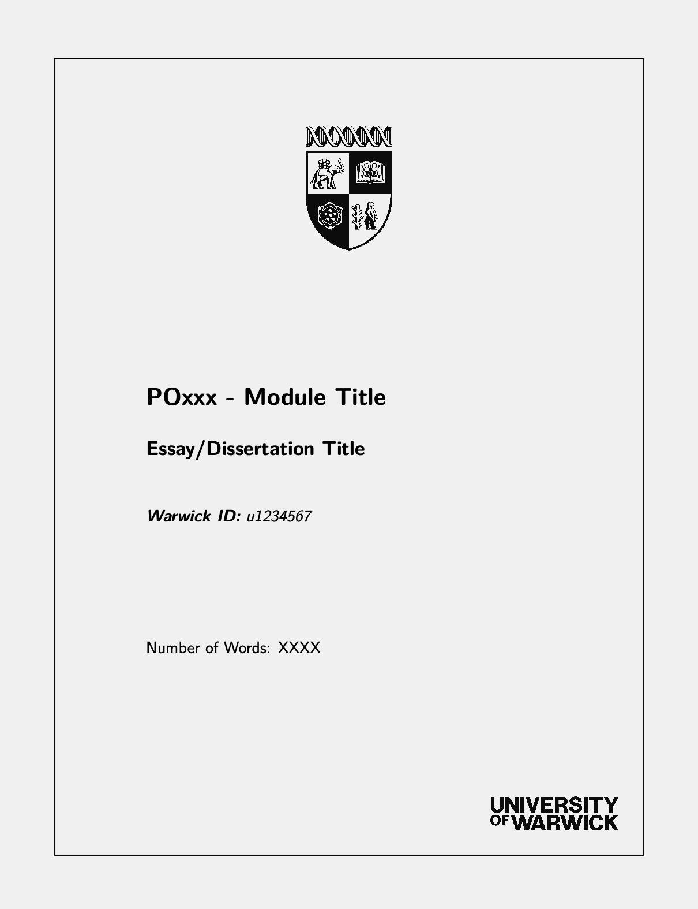
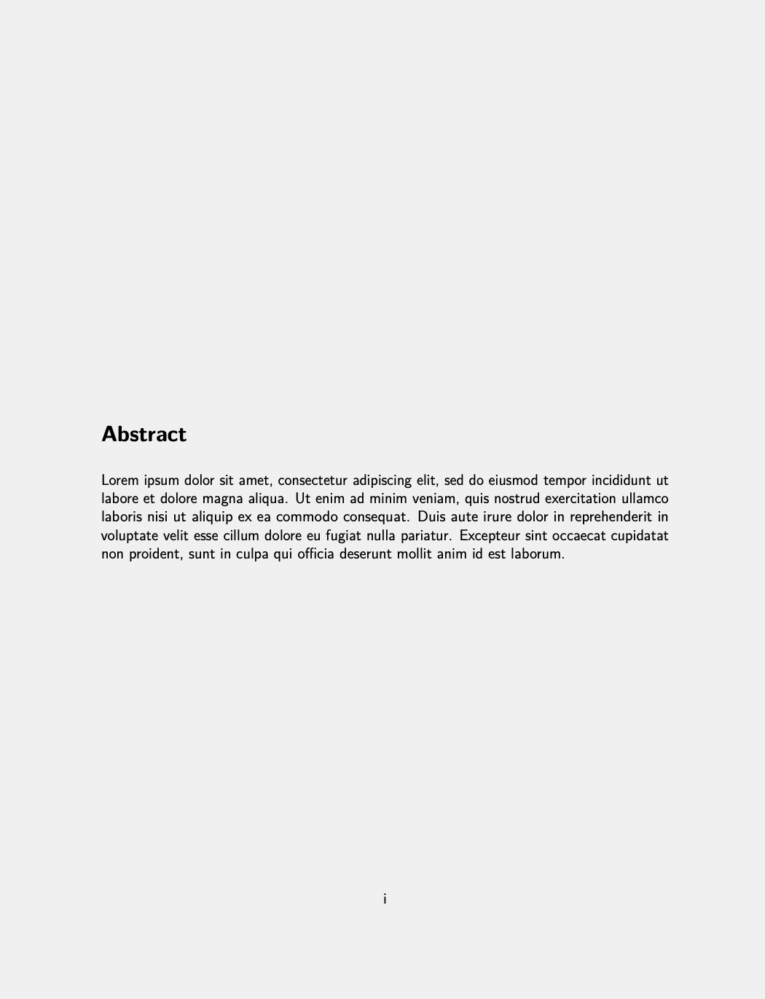
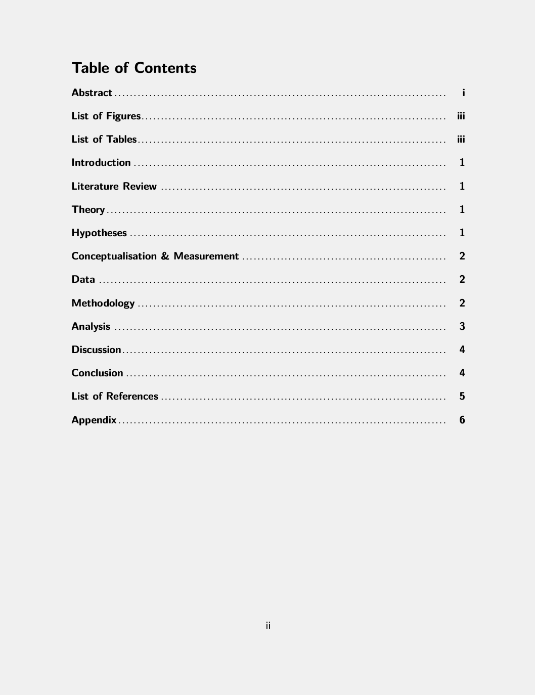
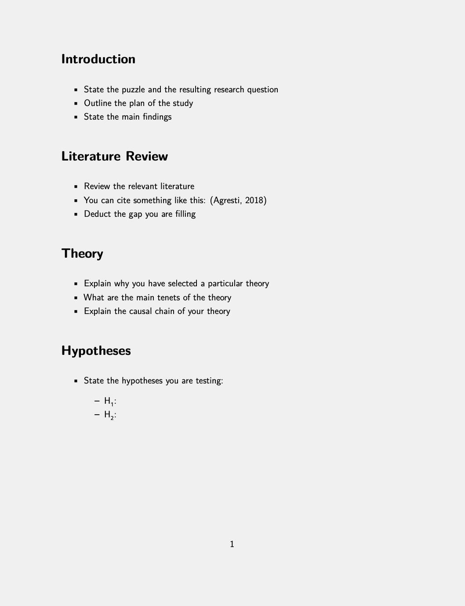
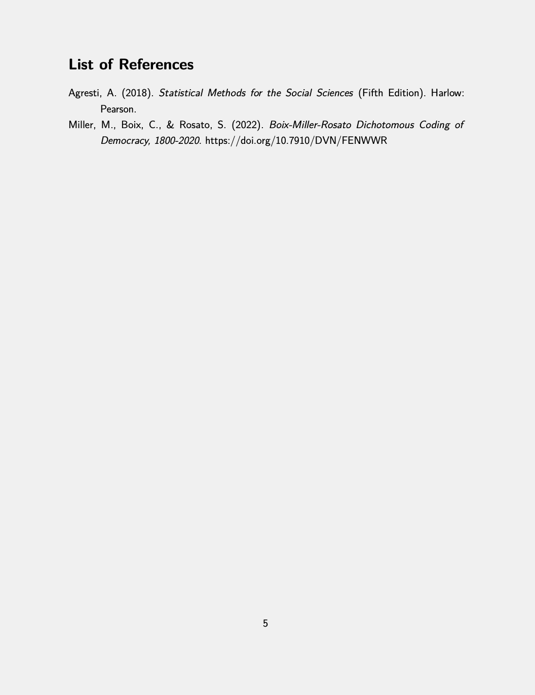
Tips
Let me finish with some tips that will help you format your dissertation properly:
Referencing
- Ensure your referencing is consistent and that you include a correctly and coherently formatted List of References. I strongly recommend you automate the process with EndNote, or by writing in Quarto. The number of references in a dissertation of 10,000 words is so high that manual editing quickly becomes an absolute pain. If you are unsure how to reference certain sources, then have a look at the examples provided in the UG or MA Handbook. Should you still be unsure after that, please get n touch with me.
Figures and Tables
- Place tables and figures in the text where you make reference to them, not in an appendix. Only resort to an appendix for complimentary material, such as robustness checks or additional figures and tables that are not essential to the argument.
- Use cross-references instead of referring to tables and figures manually. When you edit your document “the table below” can easily become “the table above” without you noticing, and will make the reader’s life rather difficult. You can implement this in both MS Word and Quarto.
Further Advice
- I strongly recommend you read “Professional Writing in Political Science: A Highly Opinionated Essay” (Stimson, n.d.). The clue is in the title: some of the argument is opinion, so take this with a pinch of salt. But Stimson offers some very sound advice for writing and presenting your research.
References
Adcock, R., & Collier, D. (2001). Measurement Validity: A Shared Standard for Qualitative and Quantitative Research. American Political Science Review, 95(3), 529–546.
Agresti, A. (2018). Statistical Methods for the Social Sciences (Fifth). Harlow: Pearson.
Ake, C. (1993). The Unique Case of African Democracy. International Affairs, 69(2), 239–244. https://doi.org/10.2307/2621592
Arel-Bundock, V. (2022). modelsummary: Data and Model Summaries in R. Journal of Statistical Software, 103(1), 1–23.
Barrios, S., Bertinelli, L., & Strobl, E. (2010). Trends in rainfall and economic growth in africa: A neglected cause of the african growth tragedy. Review of Economics and Statistics, 92(2), 350–366. https://doi.org/10.1162/rest.2010.11212
Beck, N., Katz, J. N., & Tucker, R. (1998). Taking Time Seriously: Time-Series-Cross-Section Analysis with a Binary Dependent Variable. American Journal of Political Science, 42(4), 1260–1288.
Boix, C., & Stokes, S. (2003). Endogenous Democratization. World Politics, 55, 517–549. https://doi.org/https://doi.org/10.1353/wp.2003.0019
Clark, T., Foster, L., & Bryman, A. (2019). How to do your Social Research Project or Dissertation. Oxford University Press. https://doi.org/10.1093/hepl/9780198811060.001.0001
Clark, T., Foster, L., & Bryman, A. (2021). Bryman’s Social Research Methods (Sixth). Oxford: Oxford University Press.
Dahl, R. A. (1971). Polyarchy: Participation and Opposition. New Haven, CT: Yale University Press.
Epstein, D. L., Bates, R., Goldstone, J., Kristensen, I., & O’Halloran, S. (2006). Democratic Transitions. American Journal of Political Science, 50(3), 551–569. https://doi.org/10.1111/j.1540-5907.2006.00201.x
Gerring, J. (2007). The Case Study: What it is and What it Does. In C. Boix & S. C. Stokes (Eds.), The Oxford Handbook of Comparative Politics. Oxford: Oxford University Press.
Gujarati, D. N., & Porter, D. C. (2009). Basic Econometrics (Fifth International Edition). New York: McGraw-Hill.
Healy, K. (2019). Data Visualization – A Practical Introduction. Princeton, NJ: Princeton University Press.
Hume, D. (1748). An enquiry concerning human understanding. A. Millar.
Hume, D. (1999). An enquiry concerning human understanding (T. L. Beauchamp, Ed.). Oxford University Press.
Ivory, S. B. (2021). Becoming a Critical Thinker – For your university studies and beyond. Oxford: Oxford University Press.
Jørgensen, M., & Phillips, L. (2002). Discourse Analysis as Theory and Method. Sage. https://doi.org/10.4135/9781849208871
Krippendorff, K. (2019). Content Analysis: An Introduction to Its Methodology. SAGE Publications, Inc. https://doi.org/10.4135/9781071878781
Landman, T., & Carvalho, E. (2017). Issues and Methods in Comparative Politics: An Introduction (Fourth). London: Routledge.
Lijphart, A. (1971). Comparative Politics and the Comparative Method. The American Political Science Review, 65(3), 682–693.
Linke, F. (forthcoming). Introduction to Quantitative Methods in the Social Sciences. Oxford: Oxford University Press.
Long, J. S. (1997). Regression Models for Categorial and Limited Dependent Variables. Thousand Oaks: Sage.
Miles, M. B., Huberman, A. M., & Saldaña, J. (2014). Qualitative Data Analysis: A Methods Sourcebook (3rd ed.). Sage.
Mill, J. S. (1888). A System of Logic, Ratiocinative and Inductive (Eighth Edition). New York: Harper; Brothers. https://doi.org/10.4324/9781003009450-5
Oxford Learner’s Dictionaries. (n.d.). available online at https://www.oxfordlearnersdictionaries.com/.
Popper, K. R. (1935). Logik der forschung. Zur erkenntnistheorie der modernen naturwissenschaft (Vol. 9). Verlag von Julius Springer.
Popper, K. R. (2005). The logic of scientific discovery. Routledge. https://doi.org/10.4324/9780203994627
Przeworski, A., Alvarez, M. E., Cheibub, J. A., & Limongi, F. (2000). Democracy and Development - Political Institutions and Well-Being in the World, 1950-1990. Cambridge: Cambridge University Press. https://doi.org/10.1017/CBO9780511804946
Rihoux, B. (2006). Qualitative comparative analysis (QCA) and related systematic comparative methods: Recent advances and remaining challenges for social science research. International Sociology, 21(5), 679–706.
Stimson, J. A. (n.d.). Professional Writing in Political Science: A Highly opinionated Essay. available online at http://stimson.web.unc.edu/files/2018/02/Writing.pdf.
Tufte, E. R. (2001). The Visual Display of Quantitative Information (Second). Cheshire, Conn: Graphics Press.
Walliman, N. (2020). Your Research Project – Designing, Planning, and Getting Started (Fourth Edition). London: Sage.
Wickham, H. (2016). ggplot2: Elegant Graphics for Data Analysis. Springer-Verlag New York. https://ggplot2.tidyverse.org